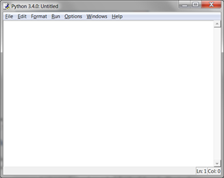
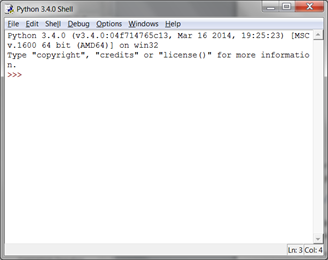
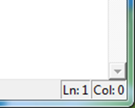
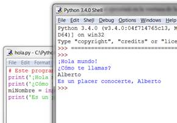
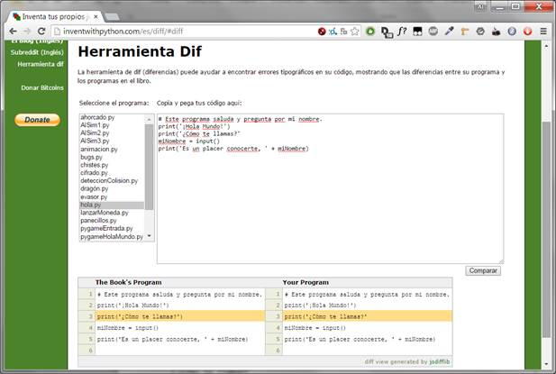

|
|
Capítulo 3 |
Escribiendo Programas |

Temas Tratados En Este Capítulo:
· Flujo de ejecución
· Cadenas
· Concatenación de cadenas
· Tipos de datos (como cadenas o enteros)
· Usando el editor de archivos para escribir programas
· Guardar y ejecutar programas en IDLE
· La función print()
· La función input()
· Comentarios
· Sensibilidad a mayúsculas
Suficiente matemática por ahora. Ahora veamos qué puede hacer Python con texto. En este capítulo, aprenderás cómo almacenar texto en variables, combinar textos, y mostrar texto en pantalla.
Casi todos los programas muestran texto al usuario, y el usuario ingresa texto en tus programas a través del teclado. En este capítulo crearás tu primer programa. Este programa muestra el saludo “¡Hola Mundo!” y te pregunta tu nombre.
Cadenas
En Python, los valores de texto se llaman cadenas. Los valores cadena pueden usarse igual que valores enteros o float. Puedes almacenar cadenas en variables. En código, las cadenas comienzan y terminan con una comilla simple ('). Prueba introducir este código en la consola interactiva:
>>> spam = 'hola'
Las comillas simples le dicen a Python dónde comienza y termina la cadena, pero no son parte del texto del valor de cadena. Ahora bien, si escribes spam en la consola interactiva, podrás ver el contenido de la variable spam. Recuerda, Python evalúa las variables al valor almacenado dentro de las mismas. En este caso, la cadena 'hola':
>>> spam = 'hola'
>>> spam
'hola'
Las cadenas pueden contener cualquier caracter del teclado y pueden ser tan largas como quieras. Todos estos son ejemplos de cadenas:
'hola'
'¡Oye tú!'
'GATITOS'
'7 manzanas, 14 naranjas, 3 limones'
'Si no está relacionado con elefantes es irrelefante.'
'Hace mucho tiempo, en una galaxia muy, muy lejana...'
'O*&#wY%*&OCfsdYO*&gfC%YO*&%3yc8r2'
Concatenación de cadenas
Las cadenas pueden combinarse con operadores para generar expresiones, al igual que los números enteros y floats. Puedes combinar dos cadenas con el operador +. Esto es concatenación de cadenas. Prueba ingresando '¡Hola' + 'Mundo!' into the interactive shell:
>>> '¡Hola' + 'Mundo!'
'¡HolaMundo!'
La expresión se evalúa a un valor único de cadena, '¡HolaMundo!'. No hay un espacio entre las palabras porque no había espacios en ninguna de las cadenas concatenadas, a diferencia del siguiente ejemplo:
>>> '¡Hola ' + 'Mundo!'
'¡Hola Mundo!'
El operador + funciona de forma diferente sobre valores enteros y cadenas, ya que son distintos tipos de datos. Todos los valores tienen un tipo de datos. El tipo de datos del valor 'Hola' es una cadena. El tipo de datos del valor 5 es un entero. El tipo de datos le dice a Python qué deben hacer los operadores al evaluar expresiones. El operador + concatena valores de tipo cadena, pero suma valores de tipo entero (o float).
Escribir Programas en el Editor de Archivos de IDLE
Hasta ahora has estado escribiendo instrucciones, una a la vez, en la consola interactiva de IDLE. Cuando escribes programas, sin embargo, escribes varias instrucciones y haces que se ejecuten a la vez. ¡Escribamos ahora tu primer programa!
IDLE tiene otra parte llamada el editor de archivos. Haz clic en el menú File (Archivo) en la parte superior de la ventana de la consola interactiva. Luego selecciona New Window (Nueva Ventana). Aparecerá una ventana vacía para que escribas el código de tu programa, como se ve en la Figura 3-1.
 
Figura 3-1: La ventana del editor de archivos (izquierda) y la consola interactiva (derecha).
Las dos ventanas se ven parecidas, pero sólo recuerda esto: La ventana de la consola interactiva tendrá el símbolo de sistema >>>. La ventana del editor de archivos no lo tendrá.
¡Hola Mundo!
Es tradición entre programadores hacer que su primer programa muestre “¡Hola Mundo!” en la pantalla. Ahora crearás tu propio programa Hola Mundo.
Al ingresar tu programa, no escribas los números a la izquierda del código. Están allí sólo para que este libro pueda referirse al código por número de línea. La esquina inferior derecha de la ventana del editor de archivos te indicará dónde está el cursor intermitente. La Figura 3-2 muestra que el cursor se encuentra sobre la línea 1 y sobre la columna 0.

Figura 3-2: La parte inferior derecha de la ventana del editor de archivos te indica en qué línea está el cursor.
hola.py
Ingresa el siguiente texto en la nueva ventana del editor de archivos. Este es el código fuente del programa. Contiene las instrucciones que Python seguirá cuando el programa se ejecute.
¡NOTA IMPORTANTE! Los programas de este libro sólo podrán ejecutarse sobre Python 3, no Python 2. Al iniciar la ventana IDLE, dirá algo como “Python 3.4.2” en la parte superior. Si tienes Python 2 instalado, es posible instalar también Python 3 a la vez. Para descargar Python 3, dirígete a https://python.org/download/.
hola.py
1. # Este programa saluda y pregunta por mi nombre.
2. print('¡Hola mundo!')
3. print('¿Cómo te llamas?')
4. miNombre = input()
5. print('Es un placer conocerte, ' + miNombre)
El programa IDLE escribirá diferentes tipos de instrucciones en diferentes colores. Cuando hayas terminado de escribir el código, la ventana debería verse así:

Figura 3-3: La ventana del editor de archivos se verá así luego de haber ingresado el código.
Guardando el programa.
Una vez que hayas ingresado tu código fuente, guárdalo haciendo clic en File (Archivo) ► Save As (Guardar Como). O pulsa Ctrl-S para guardar usando un acceso directo del teclado. La Figura 3-4 muestra la ventana Guardar Como que se abrirá. Escribe hola.py en el campo de texto Nombre y haz clic en Guardar.

Figura 3-4: Guardando el programa.
Deberías guardar tus programas a menudo. De esta manera, si el ordenador se bloquea o accidentalmente sales de IDLE no perderás mucho trabajo.
Abriendo tus Programas Guardados
Para cargar un programa guardado, haz clic en File (Archivo) ► Open (Abrir). Elige el archivo en la ventana que aparece y haz clic en el botón Open (Abrir). Tu programa hola.py se abrirá en la ventana del Editor de Archivos.
Es hora de ejecutar el programa. Haz clic en File (Archivo) ► Run (Ejecutar) ► Run Module (Ejecutar Módulo) o simplemente pulsa F5 desde la ventana del editor de archivos. Tu programa se ejecutará en la ventana de la consola interactiva.
Escribe tu nombre cuando el programa lo pida. Esto se verá como en la Figura 3-5:

Figura 3-5: La consola interactiva luego de ejecutar hola.py.
Cuando escribas tu nombre y pulses intro, el programa te saludará por tu nombre. ¡Felicitaciones! Haz escrito tu primer programa y ya eres un programador. Pulsa F5 de nuevo para volver a ejecutar el programa y esta vez escribe otro nombre.
Si has obtenido un error, compara tu código con el de este libro usando la herramienta online diff en http://invpy.com/es/diff/hola. Copia y pega tu código del editor de archivos en la página web y haz clic en el botón Comparar. Esta herramienta resaltará cualquier diferencia entre tu código y el código en este libro, como en la Figura 3-6.

Figure 3-6: La herramienta diff en http://invpy.com/es/diff.
Mientras escribes código, si obtienes un NameError que se ve así:
¡Hola mundo!
¿Cómo te llamas?
Alberto
Traceback (most recent call last):
File "C:/Python26/test1.py", line 4, in <module>
miNombre = input()
File "<string>", line 1, in <module>
NameError: name 'Alberto' is not defined
...quiere decir que estás usando Python 2, en lugar de Python 3. Instala una versión de Python 3 de http://python.org. Luego, re-ejecuta el programa con Python 3.
Cómo Funciona el Programa “Hola Mundo”
Cada línea de código es una instrucción interpretada por Python. Estas instrucciones constituyen el programa. Las instrucciones de un programa de computadora son como los pasos en una receta de un libro de cocina. Cada instrucción se ejecuta en orden, comenzando por la parte superior del programa y en dirección descendente hasta el final de la lista de instrucciones.
El paso del programa en el cual Python se encuentra se llama ejecución. Cuando el programa comienza, la ejecución se encuentra en la primera instrucción. Luego de ejecutarla, la ejecución baja hasta la próxima instrucción.
Veamos cada línea de código para entender qué es lo que hace. Comenzaremos por la línea número 1.
Comentarios
1. # Este programa saluda y pregunta por mi nombre.
Esta instrucción es un comentario. Cualquier texto a continuación del signo # (llamado símbolo almohadilla) es un comentario. Los comentarios no son para Python, sino para tí, el programador. Python ignora los comentarios. Los comentarios son notas del programador acerca de lo que el código hace. Puedes escribir lo que quieras en un comentario. Para facilitar la lectura del código fuente, este libro muestra los comentarios en texto de color gris claro.
Los programadores usualmente colocan un comentario en la parte superior de su código para dar un título a su programa.
Funciones
Una función es una especie de mini-programa dentro de tu programa. Las funciones contienen instrucciones que se ejecutan cuando la función es llamada. Python ya tiene algunas funciones integradas. Dos funciones, print() e input(), son descriptas a continuación. Lo maravilloso acerca de las funciones es que sólo necesitas saber lo que la función hace, pero no cómo lo hace.
Una llamada a una función es un fragmento de código que dice a Python que ejecute el código dentro de una función. Por ejemplo, tu programa llama a la función print() para mostrar una cadena en la pantalla. La función print() toma la cadena que tú escribes entre los paréntesis como entrada y muestra el texto en la pantalla.
Para mostrar ¡Hola mundo! en la pantalla, escribe el nombre de la función print, seguido por un paréntesis de apertura, seguido por la cadena '¡Hola mundo!' y un paréntesis de cierre.
La función print()
2. print('¡Hola mundo!')
3. print('¿Cómo te llamas?')
Las líneas 2 y 3 son llamadas a la función print(). Un valor entre los paréntesis de la llamada a una función es un argumento. El argumento en la llamada a la función print() de la línea 2 es '¡Hola mundo!'. El argumento en la llamada a print() de la línea 3 es '¿Cómo te llamas?'. Esto se llama pasar el argumento a la función print().
En este libro, los nombres de funciones tienen paréntesis al final. Esto deja en claro que print() hace referencia a una función llamada print(), y no a una variable llamada print. Esto es como el uso de comillas alrededor del número '42' para indicar a Python that que estás refiriéndote a la cadena '42' y no al entero 42.
La función input()
4. miNombre = input()
La línea 4 es una sentencia de asignación con una variable (miNombre) y una llamada a una función (input()). Cuando input() es llamada, el programa espera a que el usuario ingrese texto. La cadena de texto que el usuario ingresa se convierte en el valor al que se evalúa la llamada a la función. Las llamadas a funciones pueden usarse en expresiones, en cualquier lugar en que pueda usarse un valor.
El valor al cual se evalúa la llamada a la función es llamado valor de retorno. (De hecho, “el valor devuelto por la llamada a una función” significa lo mismo que “el valor al que se evalúa la llamada a la función”.) En este caso, el valor devuelto por la función input() es la cadena que el usuario ha escrito (su nombre). Si el usuario ha ingresado “Alberto”, la llamada a la función input() se evalúa a la cadena 'Alberto'. La evaluación se ve así:
miNombre = input()
▼
miNombre = 'Alberto'
Así es como el valor de cadena 'Alberto' es almacenado en la variable miNombre.
Uso de Expresiones en Llamadas a Funciones
5. print('Es un placer conocerte, ' + miNombre)
La última línea es otra llamada a la función print(). La expresión 'Es un placer conocerte, ' + miNombre entre los paréntesis de print(). Sin embargo, los argumentos son siempre valores individuales. Python evaluará primero esta expresión y luego pasará este valor como argumento. Si 'Alberto' está almacenado en miNombre, la evaluación ocurre así:
print(Es un placer conocerte, ' + miNombre)
▼
print(Es un placer conocerte, ' + 'Alberto')
▼
print(Es un placer conocerte, Alberto')
Así es como el programa saluda al usuario por su nombre.
Terminando el Programa
Una vez que el programa ejecuta la última línea, termina y se sale del programa. Esto quiere decir que el programa deja de ejecutarse. Python olvida todos los valores almacenados en variables, incluyendo la cadena almacenada en miNombre. Si ejecutas el programa de nuevo y escribes un nombre diferente, el programa pensará que esa otra cadena es tu nombre.
¡Hola mundo!
¿Cómo te llamas?
Carolyn
Es un placer conocerte, Carolyn
Recuerda, la computadora hace exactamente lo que la programas para hacer. Las computadoras son tontas y sólo siguen tus instrucciones al pie de la letra. A la computadora no le importa si escribes tu nombre, el nombre de otra persona, o sólo algo absurdo. Escribe lo que quieras. La computadora lo tratará de la misma forma:
¡Hola mundo!
¿Cómo te llamas?
popó
Es un placer conocerte, popó
Nombres de Variables
Dar nombres descriptivos a las variables facilita entender qué es lo que hace un programa. Imagina si estuvieses mudándote a una nueva casa y hubieses colocado a cada una de tus cajas la etiqueta “Cosas”. ¡Eso no sería útil en lo absoluto!
En lugar de miNombre, podrías haber llamado a esta variable abrahamLincoln o nOmBrE. A Python no le importa. Ejecutará el programa de la misma forma.
Los nombres de variables son sensibles a mayúsculas. Sensible a mayúsculas significa que el mismo nombre de variable con diferente capitalización se considera una variable diferente. De modo que spam, SPAM, Spam, y sPAM son cuatro variables diferentes en Python. Cada una de ellas contiene su propio valor independiente. Es una mala idea tener variables con diferente capitalización en tu programa. En lugar de ello, usa nombres descriptivos para tus variables.
Los nombres de variables se escriben habitualmente en minúscula. Si hay más de una palabra en el nombre de la variable, escribe en mayúscula la primera letra de cada palabra después de la primera. Esto hace que tu código sea más legible. Por ejemplo, el nombre de variable loQueHeDesayunadoEstaMañana es mucho más fácil de leer que loquehedesayunadoestamañana. Esto es una convención: una forma opcional pero estándar de hacer las cosas en Python.
Es preferible usar nombres cortos antes que largos a las variables: desayuno o comidaEstaMañana son más fáciles de leer que loQueHeDesayunadoEstaMañana.
Los ejemplos en este libro de la consola interactiva usan nombres de variables como spam, eggs, ham, y bacon. Esto es porque los nombres de variables en estos ejemplos no importan. Sin embargo, todos los programas de este libro usan nombres descriptivos. Tus programas también deberían usar nombres de variables descriptivos.
Resumen
Luego de haber aprendido acerca de cadenas y funciones, puedes empezar a crear programas que interactúan con usuarios. Esto es importante porque texto es la principal vía de comunicación entre el usuario y la computadora. El usuario ingresa texto a través el teclado mediante la función input(), y la computadora muestra texto en la pantalla usando la función print().
Las cadenas son simplemente valores de un nuevo tipo de datos. Todos los valores tienen un tipo de datos, y hay muchos tipos de datos en Python. El operador + se usa para unir cadenas.
Las funciones se usan para llevar a cabo alguna instrucción complicada como parte de nuestro programa. Python tiene muchas funciones integradas acerca de las cuales aprenderás en este libro. Las llamadas a funciones pueden ser usadas en expresiones en cualquier lugar donde se usa un valor.
La instrucción de tu programa en que Python se encuentra se denomina ejecución. En el próximo capítulo, aprenderás más acerca de cómo hacer que la ejecución proceda de otras formas que simplemente en forma descendente a través del programa. Una vez que aprendas esto, podrás comenzar a crear juegos.